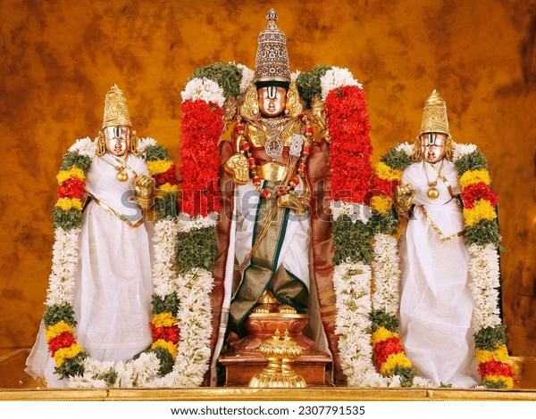
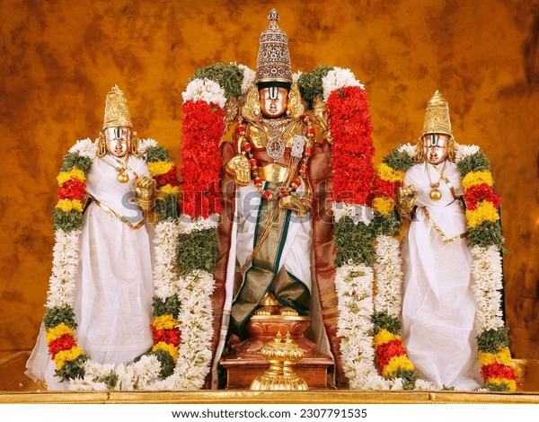

Tirumala Venkateswara Temple, also known as Sri Venkateswara Swamy Temple, is one of the most revered Hindu temples in India. Located in the hill town of Tirumala in Andhra Pradesh, it is dedicated to Lord Venkateswara, an incarnation of Vishnu.
The temple is situated on the seventh peak of the Seshachalam Hills, known as Venkatadri, at an elevation of 853 meters above sea level. It lies on the southern banks of the sacred Sri Swami Pushkarini lake.
The temple's origins trace back to around 300 CE. It was built and expanded by various dynasties including the Pallavas, Cholas, Pandyas, and the Vijayanagara Empire. Emperor Krishnadevaraya notably contributed gold to gild the inner shrine.
The temple showcases classic South Indian Dravidian architecture. The sanctum sanctorum, called Ananda Nilayam, houses the deity in a standing posture facing east. The temple towers (gopurams) are adorned with intricate carvings and golden domes.
Lord Venkateswara is worshipped as the protector of mankind in Kali Yuga. The temple follows the Vaikhanasa Agama tradition. The deity is self-manifested (Swayambhu) and is considered the 75th Divya Desam in the Vaishnava tradition.
The temple is managed by Tirumala Tirupati Devasthanams (TTD), under the control of the Andhra Pradesh government. TTD oversees temple operations, rituals, donations, and pilgrim services.
Daily rituals include Suprabhatam, Thomala Seva, Archana, and Ekantha Seva. Special weekly and monthly rituals are also performed, attracting thousands of devotees.
The temple receives 50,000 to 100,000 visitors daily, with numbers soaring to 500,000 during festivals. Devotees often climb the 3,550 steps from Alipiri or 2,400 steps from Srivari Mettu as an act of devotion.
Tirumala Temple is one of the richest religious institutions globally. Donations include gold, cash, and jewelry. The temple's hundi (donation box) collects crores of rupees annually.
According to legend, Lord Vishnu incarnated as Venkateswara to save humanity from the trials of Kali Yuga. The temple is also associated with Adisesha, the divine serpent, whose seven heads are represented by the seven hills.
Near the temple lies Silathoranam, a natural rock arch believed to date back to the Proterozoic Era. It is considered a geological and spiritual marvel.
TTD provides free and paid accommodation for pilgrims. Facilities include food halls, medical services, and transport. Online booking is available via the official TTD website.
Tirumala is accessible by road from Tirupati. APSRTC buses, taxis, and private vehicles operate regularly. The nearest airport is Tirupati Airport, and the nearest railway station is Tirupati Railway Station.
TTD offers online booking for darshan, accommodation, and seva tickets. Devotees can also donate online and watch live temple events via the official portal.
TTD promotes eco-friendly practices including plastic bans, solar energy usage, and reforestation. The temple complex is maintained with strict cleanliness protocols.
Advanced surveillance systems and trained personnel ensure safety. Queue systems, biometric verification, and time-slot darshan help manage large crowds efficiently.
Tirumala Venkateswara Temple stands as a beacon of faith, tradition, and spiritual grandeur. Its rich history, divine presence, and cultural significance make it a must-visit for devotees and tourists alike.
For more details, visit the official Tirumala Tirupati Devasthanams website.